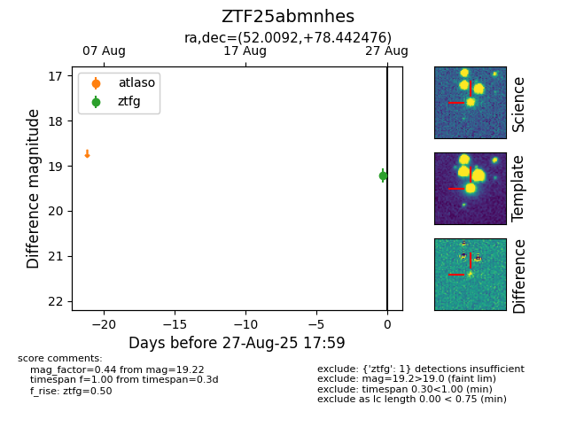

Target ZTF25abmnhes at 2025-08-27 17:59, see:
FINK: fink-portal.org/ZTF25abmnhes
Lasair: lasair-ztf.lsst.ac.uk/objects/ZTF25abmnhes
ALeRCE: alerce.online/object/ZTF25abmnhes
alt names
ZTF25abmnhes (ztf,fink)
coordinates:
equatorial (ra, dec) = (52.0092,+78.44248)
galactic (l, b) = (130.5735,+17.96636)
photometry
last ztfg=19.22
1 ztfg detections
